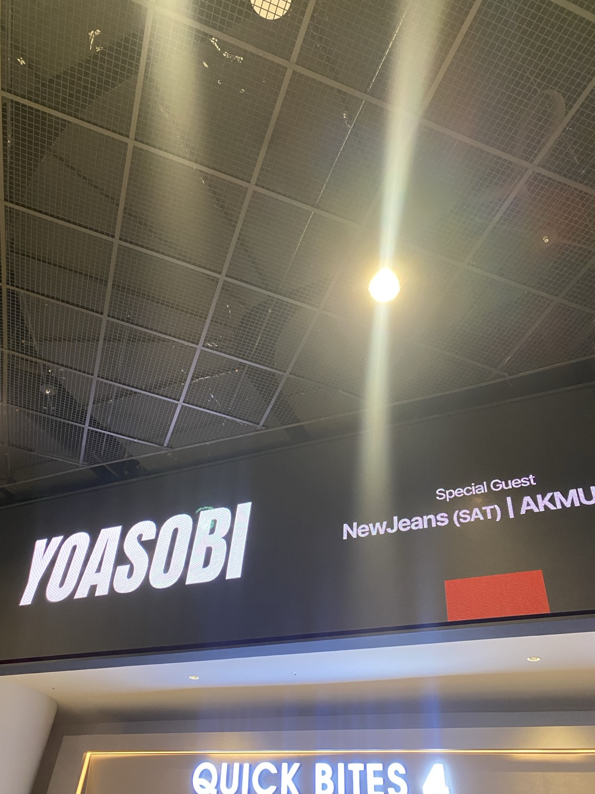
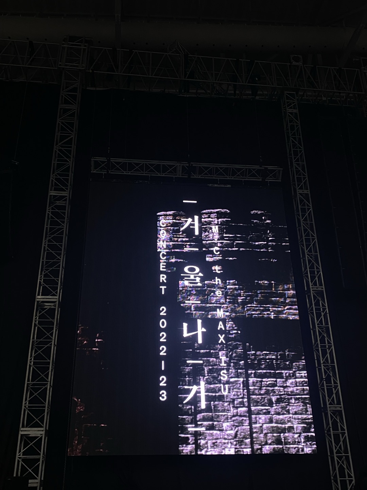
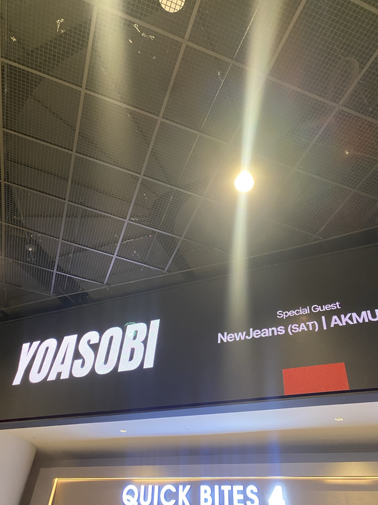
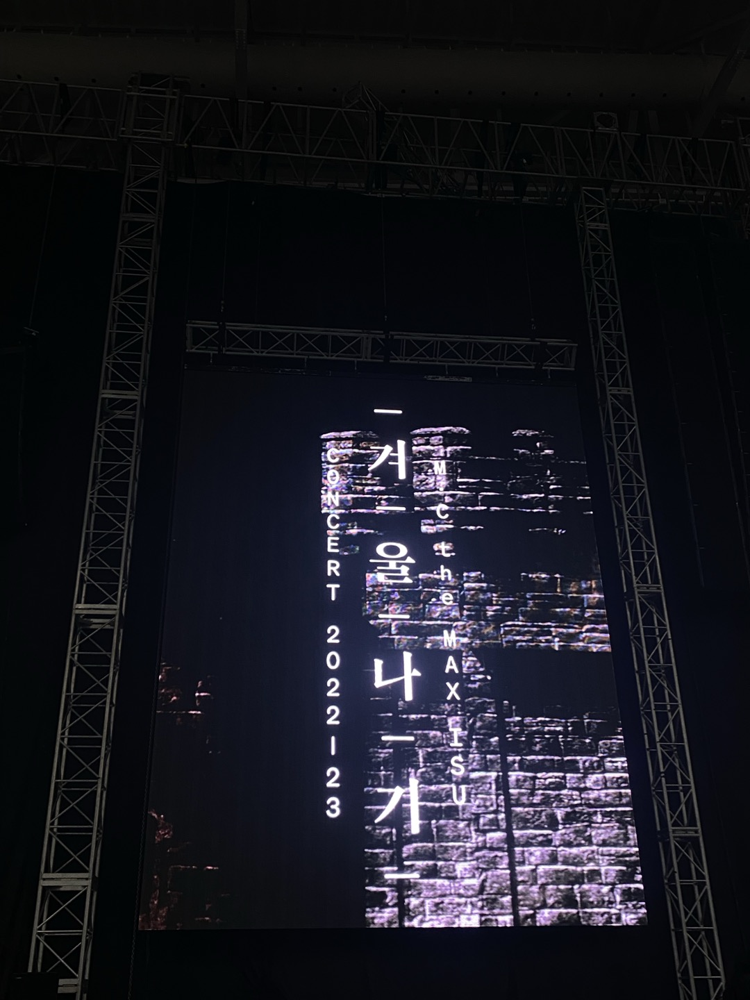
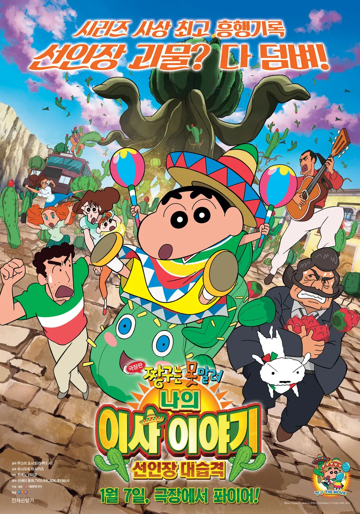
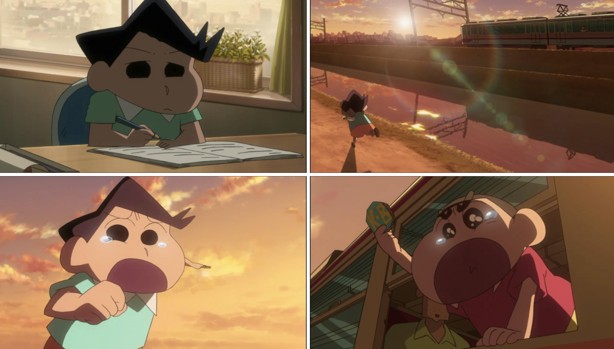
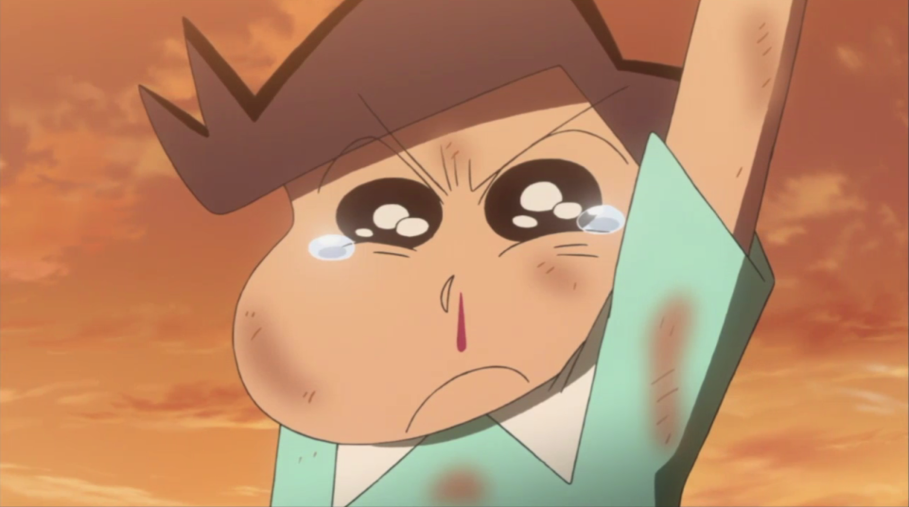

인생 영화
멕시코의 마다쿠엘요바카 마을에서 발견된 신종 선인장의 열매에 매우 맛있는 꿀이 들어 있어서 짱구 아빠의 회사에서
이를 이용해 수입을 올리고자 마을 회장에게 협조를 구하기 위해 짱구 아빠가 멕시코로 전근을 가게 된다.
그러나 마을 회장은 짱구 아빠의 제안을 강력하게 거절하는데다가 난데없이 신종 선인장에서 나온 작은 선인장들이 사람을 잡아먹기 시작하는데...


작중 짱구가 유치원 친구들에게 이별을 고할 때 표현이 서투른 철수는 오히려 떠나가는 짱구를 외면하고 차갑게 대한다.
하지만 마지막 기차를 떠타고 떠날 때 철수는 용기내 기차를 타고 떠나는 짱구에게 온힘을 다해 달려가고
훗날 맹세의 떡잎마을 방법대 뱃지를 치켜들며 재회를 고한다.
이 장면을 보면서 인생을 살아감에 있어서 진짜 나를 위한 친구는 단 한명만 있어도 성공한 인생이라 느끼며 많은 눈물을 흘렸다.
댓글 남기기